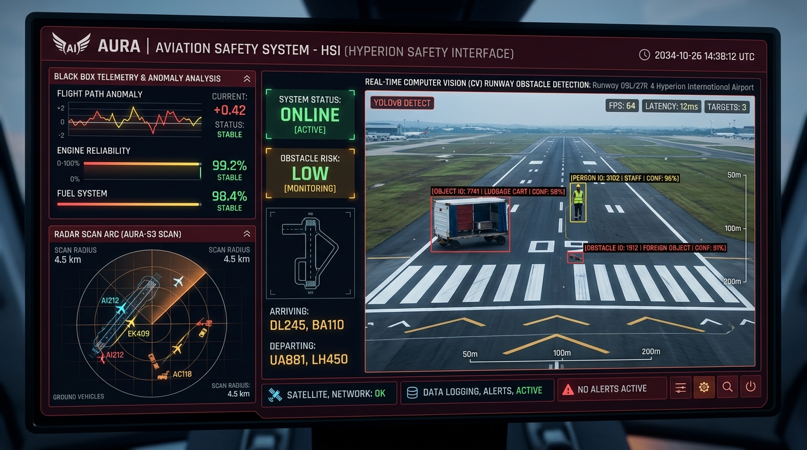

Flagship System
Aviation AI

Explainable & Adaptive AI Framework — Aviation Safety
A comprehensive 3-module intelligent aviation safety platform engineered to safeguard airport operations by detecting runway foreign objects in real-time, diagnosing black box telemetry anomalies, and predicting takeoff risk factors with high interpretability.
Runway Monitoring: YOLOv8 object detection model operating at 60+ FPS for immediate FOD (Foreign Object Debris) and runway vehicle identification.
Black Box & Risk Scoring: Integrated Random Forest and SVM algorithms to analyze multi-sensor flight and meteorological streams.
Flask REST API + XAI: Full end-to-end preprocessing, feature scaling, model inference endpoints, and Explainable AI (XAI) for transparent pilot decision support.
Python
YOLOv8
Flask
Scikit-learn
OpenCV
Explainable AI (XAI)